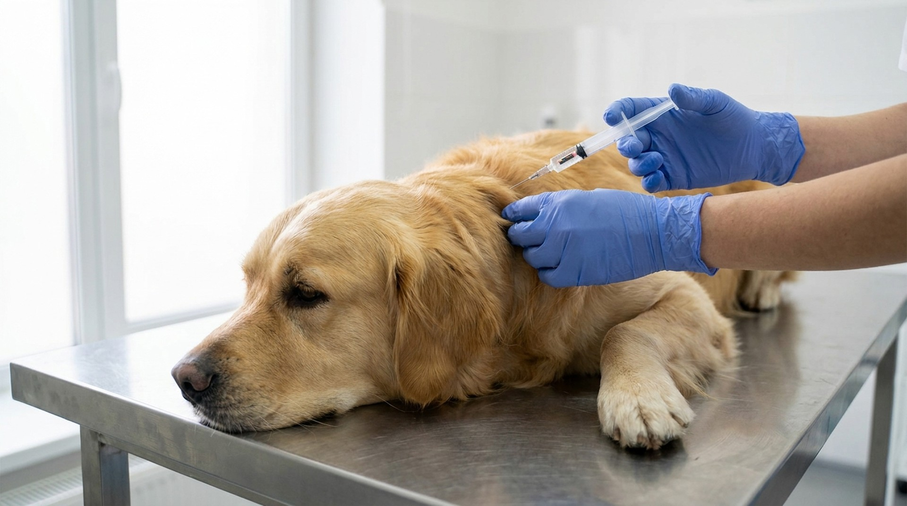

Ежегодно в России теряются сотни тысяч собак. Часть из них возвращается домой — чаще те, у кого есть чип. Процедура занимает 10 секунд, стоит как поход в кино, и работает 25 лет. При этом мифов вокруг неё больше, чем вокруг любой другой ветеринарной процедуры. Разбираем всё по фактам.
Чип — это пассивный RFID-транспондер размером с рисовое зёрнышко (обычно 2×12 мм). В нём записан уникальный 15-значный номер по стандарту ISO 11784/11785. Никаких батареек, GPS, телеметрии — только номер.
Когда сканер поднести к собаке, радиоволны активируют чип и он возвращает номер. Ветеринар, приют, пограничник или охотник с базой данных по этому номеру найдёт запись: кто хозяин, контакт, история вакцинаций.
Чип не показывает местоположение животного. Это самый распространённый миф. Чип — удостоверение личности, не навигатор.
Федеральный закон «Об ответственном обращении с животными» (ФЗ-498) в редакции 2025 года обязал маркировать (чипировать или татуировать) всех домашних животных, включённых в реестр. Для собак перечня пород, признанных потенциально опасными (список Постановления Правительства РФ №974), маркировка обязательна с 1 января 2026 года и является условием регистрации.
Остальные собаки — обязательная маркировка ещё не введена для всех пород, но:
Вывод практический: чипировать собаку сейчас — это не «для галочки», а элемент нормального документального оформления питомца.
Многие хозяева откладывают чипирование, представляя долгую болезненную процедуру. На практике:
Весь процесс — 10-15 минут с осмотром. Без наркоза, без ограничений активности после, без периода восстановления.
Укол чуть неприятнее стандартной прививки из-за диаметра иглы. Взрослая собака, которая привыкла к ветеринарным манипуляциям, переносит его спокойно. Щенки и нервные собаки могут вскрикнуть на секунду.
Более чувствительные к боли породы — той-терьеры, чихуахуа, другие миниатюрные — переносят так же, как крупные. Размер собаки на болевую реакцию практически не влияет. Седация для чипирования не нужна и не рекомендуется — риск анестезии несравнимо выше, чем дискомфорт от укола.
После процедуры: небольшая припухлость в месте укола — норма, уходит за 1-2 дня. Крайне редко (менее 0,1% случаев) — локальная реакция тканей, уплотнение; при любом изменении больше горошины — к врачу.
Цены по регионам России заметно отличаются:
В цену обычно включены: сам чип, введение, внесение в одну базу данных. Внесение в несколько баз или международный паспорт ФСВЭТН — дополнительно 300-800 ₽.
В России действует несколько реестров чипированных животных. Главные:
Ключевое правило: чип без актуальной записи в базе — бесполезен. Если сменился телефон, адрес, хозяин — данные нужно обновлять самостоятельно на сайте реестра. Это бесплатно.
Технически — с любого возраста, даже новорождённого. Практически рекомендуется:
Если щенок очень маленький и нервный — можно отложить до 3-4 месяцев. Критического значения сроки не имеют, если речь не о плановом выезде за рубеж (там нужно минимум 21 день после чипирования до прохождения границы).
Оба инструмента нужны, они не конкуренты:
Идеальная схема: чип + адресник на ошейнике + актуальные данные в базе. Так шансы вернуть потерявшуюся собаку максимальны.
Любая ветклиника и большинство приютов имеют универсальный сканер. Процедура простая:
Если клиника далеко — в крупных городах работают мобильные волонтёры с ручными сканерами. Группы помощи потерявшимся животным в ВКонтакте и Telegram часто организуют выезд бесплатно.
«Чип может мигрировать». Да, в редких случаях чип смещается на несколько сантиметров в первые дни. Это не опасно и не влияет на считывание — сканер проходят по всему телу.
«Вызывает рак». Крупнейший мета-анализ 2024 года (более 3 миллионов чипированных животных) не нашёл статистически значимой связи. Риск — менее 0,0003%.
«Государство будет следить». Чип содержит только номер. Без физического сканера рядом с собакой — никаких данных.
«Ошейник проще». Проще — да. Надёжнее — нет. Ошейник снимают живодёры и недобросовестные нашедшие, чтобы «присвоить» чужую собаку.